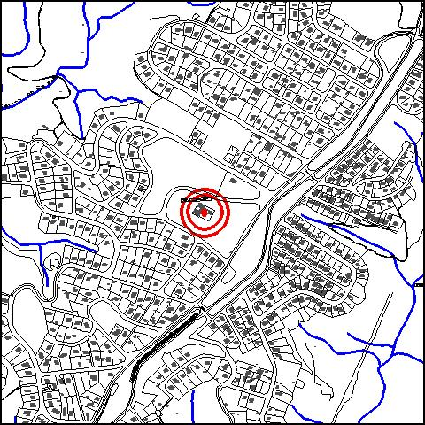
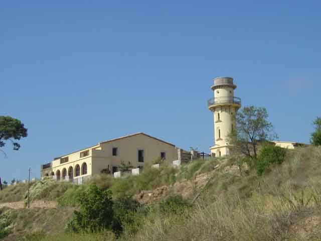

|  |
 |
Nom de l’element: Can Santeugini
Clau d’identificació: A.03
Nucli o indret: Barri de Can Santeugini.
UTM: X= 412.802, Y= 4.593.965, 170 m s.n.m..
Règim del sòl: sòl urbà.
1.1. Època de construcció i tipologia:
Masia envoltada per un mur i situada al capdamunt d’un turó. És datada del segle XVII i al 1866 es va fer l’edificació dels porxos i del mur. Els murs són d’aglomerat, mamposteria i obra. Les cobertes són de fusta i teula. Consta de diferents edificis: l’habitatge de planta baixa i planta pis que forma el cos principal amb coberta a dues aigües, un costat adossat amb una galeria a l’altura del primer pis, amb arcs rodons, un mur de tanca i una torre circular al sud (molí de vent) neogòtic. La masia ve caracteritzada per una alzina d’edat i dimensions considerables.
1.2. Estat de conservació:
Molt bo, ha estat restaurada recentment.
1.3. Ús actual:
Restaurant.
1.4. Accés:
Accés fàcil des de la carretera de Martorell a Terrassa (C243), entrant al barri de Can Santeugini.
Masia del segle XVII situada al barri perifèric de Can Santeugini.
3.1. Usos admesos:
Unihabitatge, residencial, hoteler (excepte aparthotel; i amb un màxim de 30 places), oficines i serveis, educatiu, recreatiu cultural i social, recreatiu de restauració, esportiu.
3.2. Condicions d’ordenació:
Disposa de Pla Especial de protecció del patrimoni.
3.3. Accés i serveis:
Accés des de la carretera de Martorell a Terrassa (C243), entrant al barri de Can Santeugini.
BCIL (Bé Cultural d’Interès Local)